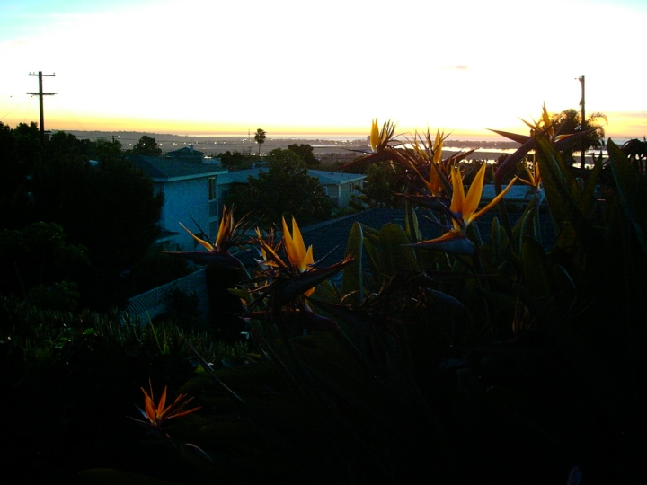

Mission bay at dusk.
|

| File size | 216059 |
| Original date | 1/5/06 5:13 PM |
| Resolution | 1024 x 768 |
| Flash | Flash did not fire |
| Focal length | 7.8mm |
| Exposure time | |
| Aperture | |
| Focus Distance | |
| Metering Mode | Multi-segment |
| Camera make | KONICA |
| Camera model | KD-300Z |
| Sensor type | |
|